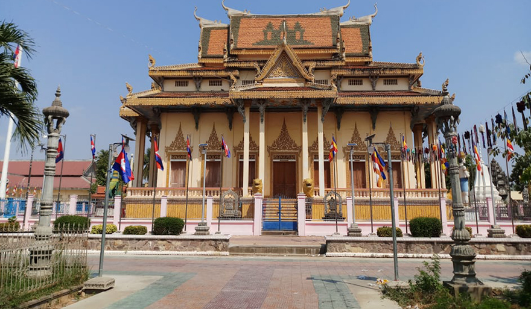

វត្តសង្កែគឺជាវត្តបែបព្រះពុទ្ធសាសនាថេវាទ មានចម្ងាយពីផ្សាណាត់ចម្ងាយប្រមាណជាង ១ គីឡូម៉ែត្រ ស្ថិតក្នុងក្រុងបាត់ដំបង វត្តសង្កែនេះត្រូវបានផ្តើមកសាងឡើងដោយលោកកឋាថន ញ៉ុញ ឬលោកម្ចាស់ព្រះកោដ្ឋ ។ វត្តនេះ គឺជាវត្តដែលធំជាងគេនៅក្នុងក្រុងបាត់ដំបង នាសម័យចៅពញា កឋាថន ឈុំ ក្នុងទសវត្សរ៍ឆ្នាំ១៩០០ ។
វត្ត«ឥន្ទ្រាធិបតី» ឬវត្ត«សង្កែ» ស្ថិតក្នុងក្រុងបាត់ដំបង បើយោងតាមឯកសាររបស់មន្ទីរវប្បធម៌ និងមន្ទីរទេសចរណ៍នោះ ព្រះវិហារនៃវត្តសង្កែនេះ ត្រូវបានផ្តើមកសាងឡើងដោយលោកកឋាថន ញ៉ុញ ឬលោកម្ចាស់ព្រះកោដ្ឋ ។ វត្តនេះ គឺជាវត្តដែលធំជាងគេនៅក្នុងក្រុងបាត់ដំបង នាសម័យចៅពញា កឋាថន ឈុំ ក្នុងទសវត្សរ៍ឆ្នាំ១៩០០ ។ ស្ថាបត្យកម្មនៃព្រះវិហារ គឺជាប្រភេទសំណង់មុខដាច់ ដែលបច្ចុប្បន្នកម្រនិងជួបនៅក្នុងស្រុក ។ ចំណែកតួរូបព្រះអង្គជីវ៍ ត្រូវចាស់ៗដំណាលថា ព្រះអង្គមានបារមីខ្លាំងពូកែ ដោយពេលកសាងមានបញ្ចុះនៅព្រះ ក្រឹង) នៃព្រះវិហារ គឺសល់តាំងពីបុរាណកាលមក ។ នៅសម័យខ្មែរក្រហម គេបានយកព្រះវិហារវត្តសង្កែនេះ ធ្វើជាឃ្លាំងដាក់គ្រាប់ ហើយជាតំបន់ហាមឃាត់ ប៉ុន្តែចុងខែធ្នូ ឆ្នាំ១៩៧៨ ត្រូវកងទព័ស្ម័គ្រចិត្តវៀតណាម បានវាយលុកចូលជួយដល់កងទ័ពកម្ពុជា ដើម្បីរំដោះចេញពីរបបប្រល័យពូជសាសន៍ ប៉ុល ពត ខ្លាំងទាំងផ្លូវគោក និងអាកាស យន្តហោះ វៀតណាមបានទំលាក់គ្រាប់លើ ព្រះវិហារ វត្តសង្កែ ព្រោះដឹងថា ខ្មែរក្រហមបានយកព្រះវិហារនេះ ធ្វើជាកន្លែងទុកដាក់ឃ្លាំងស្តុកគ្រាប់គ្រប់ប្រភេទនៅក្នុងព្រះវិហារនេះ ។ ទិដ្ឋភាពទូទៅនៃព្រះវិហារវត្តសង្កែ ព្រះវិហារបានឆេះ និងខូចខាតទាំងស្រុង (មានរូបចាស់បន្សល់តាមឯកសារ) ប៉ុន្តែអ្វីដែលពិសេសនោះគឺតួរូបព្រះអង្គជីវ៍ ក្នុងព្រះវិហារមិនខូចខាតអ្វីឡើយ ដោយភាពខ្ទេចខ្ទាំ បានបន្សល់ទុកមក តំបន់នេះក៏នៅមិនទាន់ឲ្យប្រជាពលរដ្ឋបានចេញចូលដែរ បានត្រឹមតែមើលឃើញពីចម្ងាយ ឬនៃត្រើយម្ខាងស្ទឹងសង្កែ បន្តរហូតដល់ពេលដកកងទ័ពវៀតណាមចេញទៅវិញអស់នៅឆ្នាំ១៩៨៧ឬ១៩៨៨ដោយបានរៀបចំជា បន្តមកដល់ឆ្នាំ១៩៩៣ ទើបគេបានកសាងព្រះវិហារថ្មីដោយសាងលើទីតាំងខឿននៃព្រះវិហារចាស់ដដែល ។

វត្តក្នុងរាជធានីភ្នំពេញ

វត្តក្នុងខេត្តកណ្តាល

វត្តក្នុងខេត្តព្រៃវេង

វត្តក្នុងខេត្តសៀមរាប